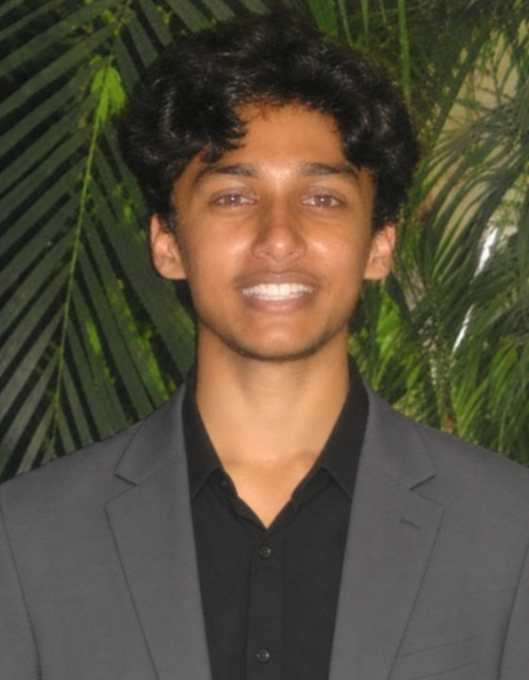
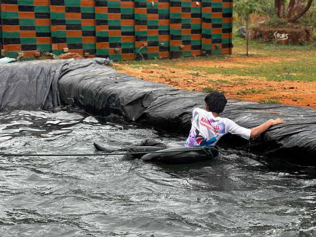

Solution Velocity
An AI-powered product development lifecycle platform designed to connect engineering teams, tools and workflows in one coordinated environment.
Product development · AIExplore the platform
Explore GitHub ↗
I’m a student, entrepreneur and aspiring aerospace engineer interested in building technology, developing engineering systems and exploring the future of aerospace.

Born in Bridgend, Wales, I have lived across multiple countries and experienced four different academic systems. Having moved between cultures, schools and environments, adapting to unfamiliar surroundings has become a regular part of my life.
My interests sit at the intersection of aerospace, engineering, software and entrepreneurship. I enjoy taking an idea, understanding the problem behind it and working with teams to develop useful projects. Frequently changing schools and educational systems has challenged me to adapt while continuing to explore how complex engineering systems work.
Outside technology, football and taekwondo have been important parts of my development. They have given me a different environment in which to learn discipline, teamwork and decision-making.
Work focused on engineering collaboration, product development and making complex work easier to understand.
An AI-powered product development lifecycle platform designed to connect engineering teams, tools and workflows in one coordinated environment.
An engineering intelligence concept exploring how a change to a requirement or design can affect downstream evidence, dependencies and decisions.
Consecuencia explores how teams can trace downstream dependencies when requirements or designs change, helping make affected evidence and decisions easier to identify. Status: concept development.
Engineering projects and research exploring aerospace systems, propulsion and complex supply chains.
This study examines the impact of supply chain disruptions on integrated aerospace companies, with a focus on how global interdependence increases systemic vulnerability in high-precision aerospace manufacturing. Although vertically integrated firms such as SpaceX, Boeing, Blue Origin, and emerging aerospace players attempt to internalise production, they remain dependent on international suppliers for critical components including semiconductors, advanced alloys, and avionics systems. This dependence exposes the sector to disruptions arising from geopolitical tensions, pandemics, labour instability, and logistical constraints. A mixed-method approach was employed, combining case study analysis (notably the Boeing 787 Dreamliner programme), secondary industry reports, and primary survey-based insights supplemented by expert perspectives. Findings indicate that disruptions consistently lead to production delays, increased operational costs, and reduced system-wide efficiency. Survey responses further suggest a limited public understanding of supply chain risk, with most perceptions confined to delivery delays rather than deeper structural vulnerabilities. The study concludes that while digital supply chain integration and supplier diversification enhance short-term resilience, long-term stability requires strategic investment in domestic capability development and multi-tiered resilient supply chain structures.
Loading the research paper…
Academic competitions, programmes and milestones. Specific years are omitted where they were not provided.
Received a High Commendation in the Science & Technology category after being shortlisted.
DexSchool of Entrepreneurship and Leadership. Selected for a national cohort focused on developing young entrepreneurs and problem-solvers.
Accepted into the programme with a merit award.
Completed an introductory aviation learning experience as part of a wider interest in flight and aerospace.
International Rank 2
Achieved a Gold Medal.
Sport has been a consistent part of my life, offering a different kind of challenge from academic and technical work.
I play primarily as an attacking midfielder, with experience in forward and wide roles. I have been part of the Real Madrid Foundation West India Select Squad U15 Team, South United U17 Select Squad, and Shanghai Lions FC U9 and U12 Select Squads.
Linkebreaker
Indus International School Pune Varsity
Elpro International School PCMC Varsity
I am a Taekwondo practitioner with 10 years of training. I earned my Poom 1 (Dan 1) black belt at age 10, awarded by the Korean Taekwondo Association of China—an achievement attained by very few Indians. I represented Karnataka Taekwondo Academy at the Karnataka State Taekwondo Championship, reaching the quarter-finals in 2024–25. I earned bronze at the ZP District Taekwondo Cup in 2025–26 and bronze at the ISSO Taekwondo National Championship in 2026–27.

From adapting to new environments to taking on challenges outdoors, every experience has shaped how I learn and work with others.
The Kedarkantha trek was a chance to take on a high-altitude Himalayan route, experience a new landscape and put preparation and endurance to the test.
Served as the Chair for the UNGA twice.
Served as the Delegate of South Africa, United States of America, United Kingdom & Counsel Member in the Indian Sports Conference.
Leadership experiences at school and working with teammates have helped me take responsibility, adapt to changing situations and contribute to a shared goal.
DexSchool is a leadership development program for teenagers, focused on building leaders for India and the world. I am a candidate for the DexSchool Class of 2027.
Explore DexSchool ↗A national scholar development program for young leaders in Indian high schools, colleges and workplaces.
Explore the program ↗A journey across countries, cultures and cities. Explore the places I have lived in chronological order.
Map markers show city-level locations. The connecting line represents chronological order, not a measured travel route.
For conversations around engineering, product development, research and student-led initiatives, feel free to get in touch.